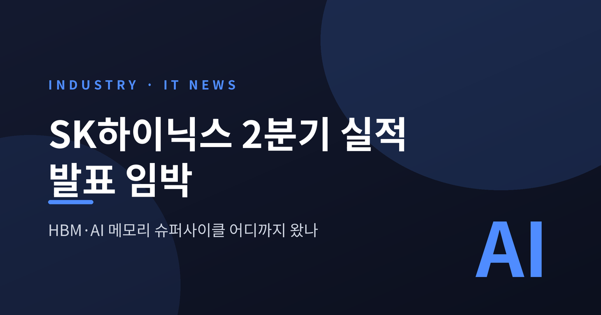
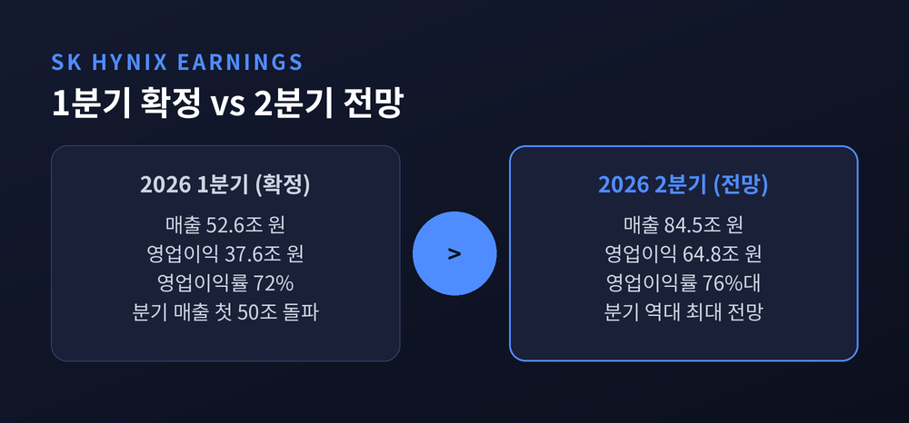
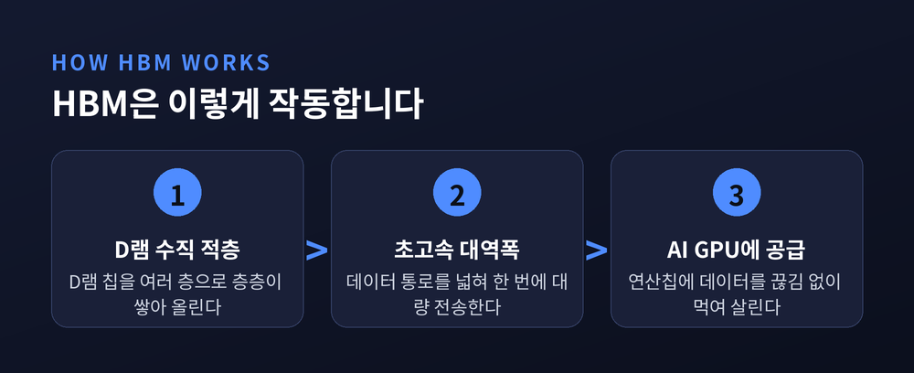
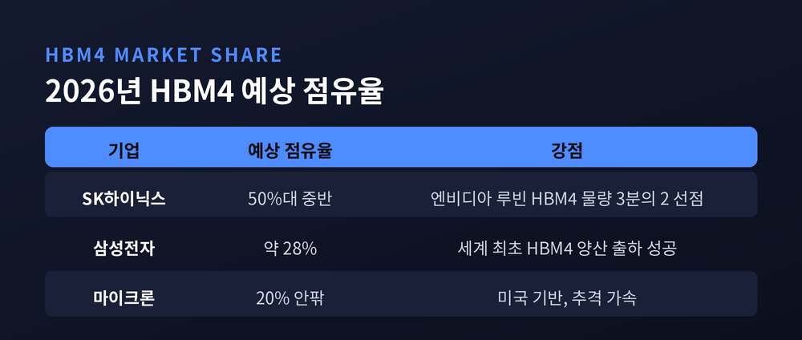
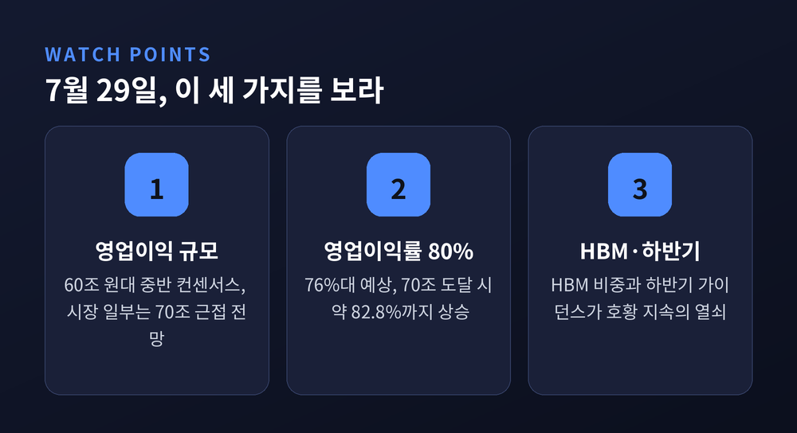

이번 글에서는 SK하이닉스 2분기 실적 발표를 앞두고 반도체 메모리 시장에서 무슨 일이 벌어지고 있는지 정리해 보겠습니다. 숫자만 나열하기보다, HBM이라는 낯선 이름이 왜 이 호황의 중심에 섰는지까지 함께 살펴봅니다.
SK하이닉스가 2026년 2분기 경영 실적을 오는 7월 29일 발표합니다.
증권가가 모아둔 컨센서스(전망 평균)는 매출 약 84조 원, 영업이익 약 64조~65조 원입니다. 아직 확정된 숫자가 아니라 발표 전 '전망치'라는 점은 짚어 둡니다.
이 전망이 그대로 실현된다면 분기 기준 역대 최대 실적입니다. 바로 앞 1분기에 이미 기록을 세웠는데, 한 분기 만에 그 기록을 다시 넘어서는 그림입니다.
참고로 1분기 확정 실적은 매출 52조 5,760억 원, 영업이익 37조 6,100억 원, 영업이익률 72%였습니다. 분기 매출이 사상 처음 50조 원을 넘긴 분기이기도 했습니다.

SK하이닉스 실적이 유난히 주목받는 데는 이유가 있습니다.
이미 한발 앞서 삼성전자가 2분기 잠정 실적을 내놓았기 때문입니다. 7월 7일 발표된 삼성전자의 2분기 매출은 171조 원, 영업이익은 89조 4,000억 원이었습니다. 지난해 같은 기간과 비교하면 영업이익이 약 19배로 뛰었습니다.
눈여겨볼 대목은 이익의 출처입니다. 삼성전자 안에서 메모리 사업이 홀로 약 93조 원의 영업이익을 낸 반면, 시스템LSI·파운드리는 적자였습니다. 사실상 이익 전부가 메모리에서 나온 셈입니다.
같은 메모리 업황을 공유하는 두 회사입니다. 삼성이 먼저 초호황을 증명했으니, SK하이닉스의 성적표를 향한 기대도 자연히 높아졌습니다. 다만 SK하이닉스는 HBM 비중이 삼성보다 높은 구조라, 같은 호황이라도 수익성은 더 가파르게 반영될 것이라는 관측이 나옵니다.
예전엔 반도체 실적이 나쁘면 두 회사가 함께 웃음을 잃었습니다. 지금은 반대로, 함께 최고 기록을 새로 쓰는 국면입니다. 그만큼 이번 발표는 한 기업의 성적을 넘어, AI가 이끄는 반도체 호황이 실제로 얼마나 견고한지를 확인하는 자리이기도 합니다.
이 호황의 한복판에는 HBM(고대역폭메모리)이 있습니다. 이름이 낯설 수 있어 잠깐 풀어 보겠습니다.
HBM은 D램 칩을 여러 층으로 수직으로 쌓아 올린 메모리입니다. 데이터가 오가는 길을 여러 겹으로 넓혀, 한 번에 훨씬 많은 정보를 초고속으로 실어 나릅니다.
왜 지금 중요해졌을까요. 생성형 AI, 즉 거대언어모델(LLM)을 학습시키고 답을 만들어 내려면 초당 수 테라바이트(TB)에 이르는 데이터를 쉼 없이 퍼 날라야 합니다. 엔비디아나 AMD의 최신 AI 반도체는 대부분 200기가바이트(GB)가 넘는 HBM을 끌어안고 있습니다.
연산을 담당하는 GPU가 '엔진'이라면, HBM은 그 엔진에 연료를 끊김 없이 대는 '고속도로'입니다. 도로가 좁으면 아무리 좋은 엔진도 힘을 못 씁니다. 그래서 요즘은 GPU만큼이나 이 메모리가 승부처로 떠올랐습니다.

여기서 한 가지 덧붙일 점이 있습니다. 과거의 범용 D램은 가격이 오르내릴 때마다 실적이 크게 출렁이는 전형적인 '사이클 산업'이었습니다. HBM은 결이 조금 다릅니다. 고객 맞춤형에 가깝고 장기 계약 성격이 강해, 상대적으로 변동성이 덜하다는 평가를 받습니다.
HBM 시장의 경쟁 구도도 짚어 보겠습니다.
현재 주력인 5세대 HBM3E에서는 SK하이닉스가 엔비디아 납품 물량 기준 약 71%를 차지하며 선두를 굳혔습니다. 사실상 독점에 가까운 지위입니다.
승부는 차세대인 HBM4로 넘어갑니다. HBM4 시장에서는 SK하이닉스가 50%대 중반, 삼성전자가 약 28%, 마이크론이 20% 안팎을 나눠 가질 것으로 전망됩니다(기관별 추정치는 조금씩 다릅니다).
특히 엔비디아의 차세대 AI 플랫폼 '루빈(Rubin)'에 들어갈 HBM4 물량의 약 3분의 2를 SK하이닉스가 이미 선점한 것으로 전해집니다. 2026년 HBM 시장 규모는 약 581억 달러로 커질 전망입니다. 결국 이 싸움은 단순한 기술 경쟁이 아니라, 엔비디아라는 거대한 수요처의 공급망 안에서 누가 더 많은 물량을 안정적으로 대느냐의 문제로 좁혀지고 있습니다.

물론 SK하이닉스만 웃고 있는 것은 아닙니다. 삼성전자는 세계 최초로 HBM4 양산 출하에 성공하며 반격의 발판을 마련했습니다. 마이크론도 추격의 고삐를 죄고 있습니다. '독주'라는 표현 뒤에는 언제든 균열이 생길 수 있다는 긴장감이 함께 깔려 있습니다.
발표 당일 무엇을 눈여겨봐야 할까요. 세 가지로 정리해 봅니다.
첫째, 영업이익의 절대 규모입니다. 60조 원대 중반이 컨센서스지만, 시장 일부에서는 70조 원 근접까지 내다봅니다.
둘째, 영업이익률 80% 돌파 여부입니다. 컨센서스대로면 76%대이지만, 영업이익이 70조 원에 닿으면 이익률은 약 82.8%까지 치솟습니다. 100원어치를 팔아 80원 넘게 남긴다는 뜻이니, 제조업에서는 보기 드문 수치입니다.
셋째, HBM과 고부가 제품의 비중, 그리고 하반기 가이던스입니다. 지금의 호황이 얼마나 더 이어질지를 가늠할 열쇠입니다.

끝으로 한 마디만 더 드리겠습니다.
숫자는 29일에 확정됩니다. 다만 그 전에 분명해진 것이 하나 있습니다. 이번 호황의 주인공은 메모리이고, 그 메모리의 심장은 HBM이라는 사실입니다.
다만 메모리는 오랜 세월 오르막과 내리막을 반복해 온 산업입니다. 공급이 늘거나 가격이 꺾이면 지금의 수익성도 언제든 흔들릴 수 있습니다. 화려한 숫자 뒤의 이 변동성까지 함께 기억해 두시길 권합니다.
29일의 성적표가 슈퍼사이클의 정점을 가리킬지, 아니면 아직 오르막의 중턱일지. 그 답을 차분히 지켜보려 합니다.